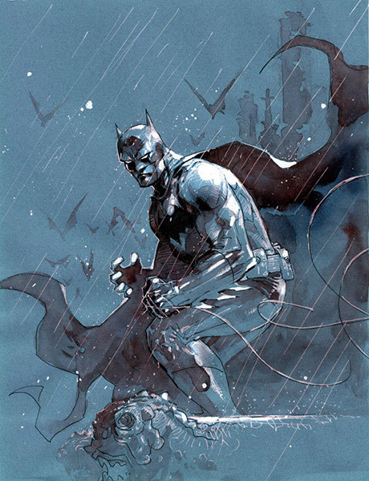

Welcome to the Batman Trivia game. You will have 60 seconds to answer 10 questions about the caped crusader. Test your knowledge and see how well you know tthe legend of the Dark Knight. Click on the start button below to begin.
1. What artist is credited with creating Batman??
2. What comickbook featured the first appearnace of Batman?
3. Who was the first actor to portray Batman on the silve screen?
4. What actor protrayed Batman on the 1960s TV show?
5. What 1960s dance did the Batman TV show popularize?
6. What comicbook writer/artist revived Batman with his "The Dark Knight Returns" series in 1986?
7. What is the name of the mental institution that Batman's most dangerous villian are confined?
8. After Robin leaves Batman's tuteluge what superhero name does he adopt?
9. Who is Batman's greatest Enemy?
10. With which villian does Batman have a romantic history?